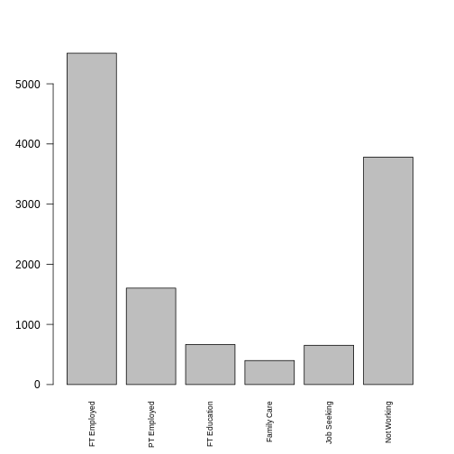
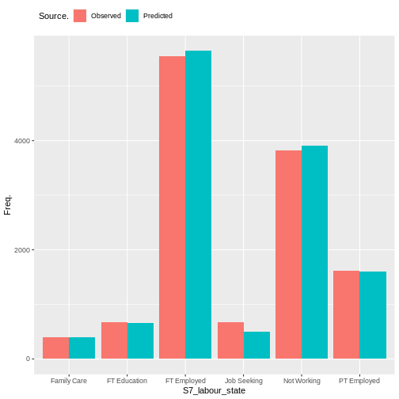
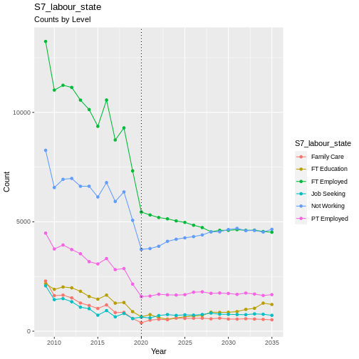
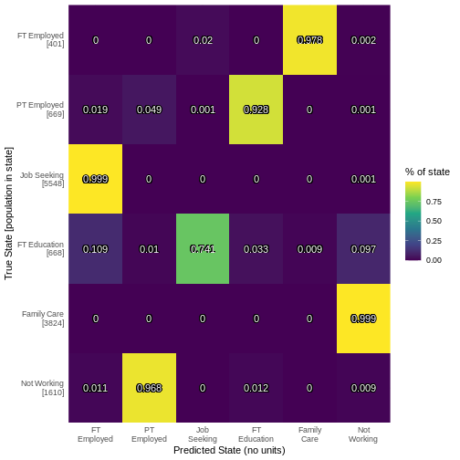
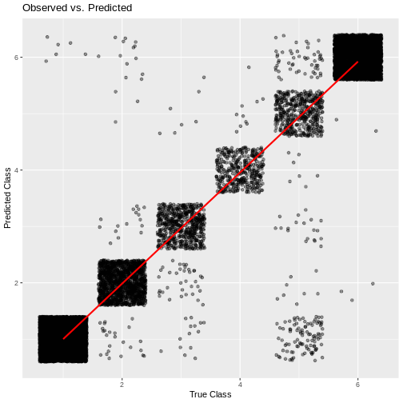

Labour
Labour state is a measure of what an individual does. There are 8 distinctive categories including employment, unemployment, and retired. The encodings of these states can be found [here]](https://leeds-mrg.github.io/Minos/documentation/data_tables.html).


Transition Model
Labour state is a complex categorical data type. Single layer neural network is a simple way to estimate this state. Use multinom function from R’s nnet package. Formula for weights included given as.
Variables used in this model. Encodings for discrete variables found in data tables.
sex. Biological sex male/female.
ethnicity. Ethnicity e.g. white british. XXXX cite.
age in years. XXXX cite.
education. Highest qualification attained. XXXX cite
sf12. Mental well-being score. XXXX cite
labour_state. Previous labour state. XXXX cite. Probably remove this. dominates prediction..
household income. Monthly disposable income of individuals household. XXXX cite.
Predictor |
Description |
Literature/Justification |
|---|---|---|
Previous Labour State |
||
Age |
||
Sex |
||
Ethnicity |
||
Region |
||
Education |
Validation
handover_ordinal(raw.dat, base.dat, v)

plot of chunk S7_labour_state_validation
Results
hard to determine goodness of fit.
use confusion matrix to estimate quality of fit.
employed/retired well predicted. unemployed/student volatile socially and expectedly hard to predict.
some deterministic replacement needed for categories like student that have specific time frames. e.g. three years for a degree.

plot of chunk labour_output
cumulative_link_plot(obs, preds)
## `geom_smooth()` using formula = 'y ~ x'

plot of chunk labour_performance